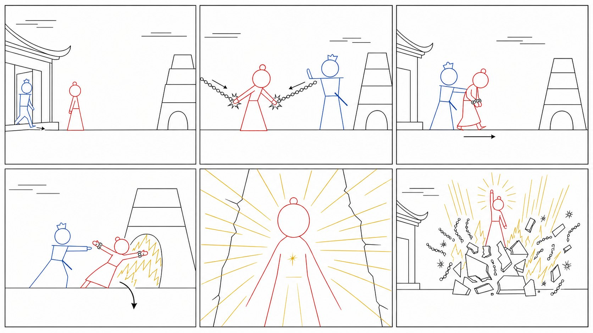
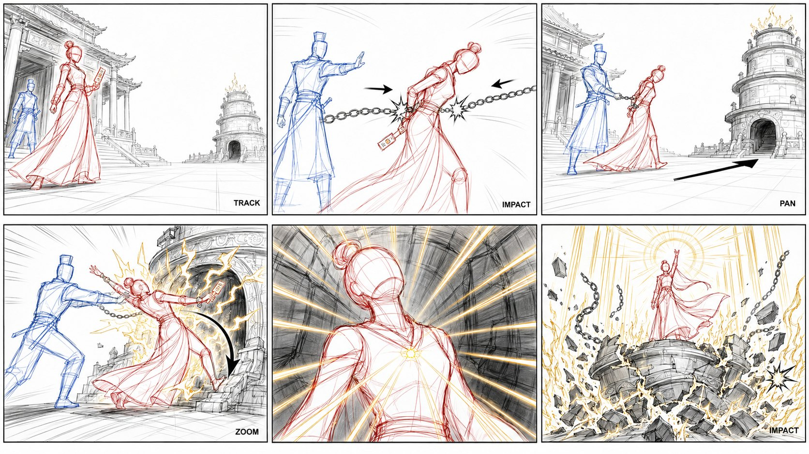
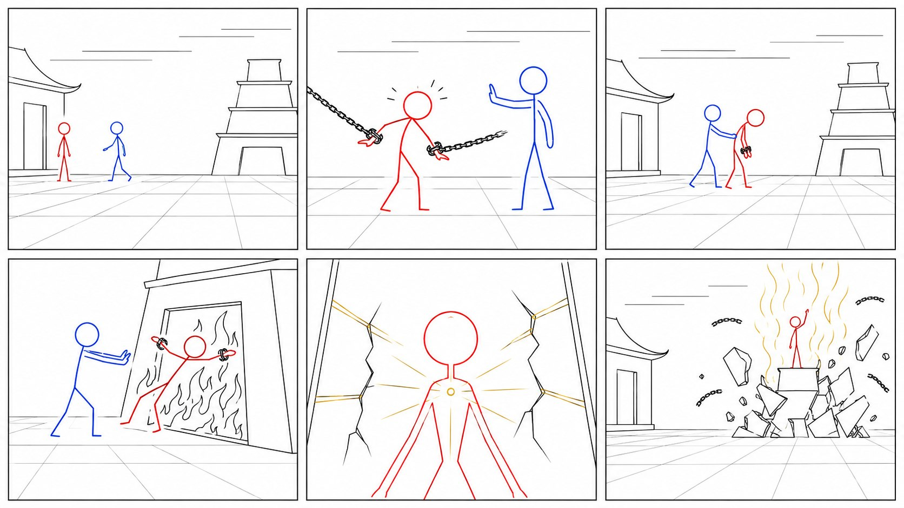
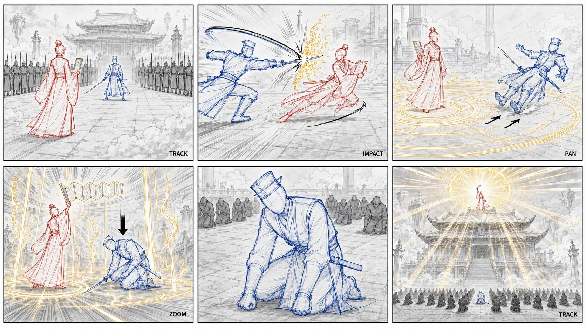

一为什么需要分镜图
AI 视频模型（如 Seedance 2.5）支持「多宫格分镜图」参考：输入一张分镜图，模型就能理解镜头顺序、人物站位、空间关系与动作方向，多镜头生成时人物和场景的一致性大幅提升。
分镜图不需要画得多好看，关键是让模型看得懂：谁在哪、干什么、镜头怎么走。本文的两套模板，就是把「剧情 → 分镜图」这个步骤交给 AI 完成——你只需要给剧情，剩下的由 AI 生成提示词，你复制到生图工具（ChatGPT Image V2 / 即梦）抽卡即可。
核心认知：分镜图是「锚点」不是「上限」。打斗的精彩程度由视频提示词决定，分镜图简略不会限制效果——就像真人电影的分镜也是简笔画。
二两个版本怎么选
同一套思路的两个画风版本，均经过实战迭代。效果对比测试中，当前主观推荐半写实人偶版，但两个都可使用：
| 对比项 | 火柴人版（中文） | 半写实人偶版（英文，推荐） |
|---|---|---|
| 画风 | 极简火柴人 / 简笔画，中文提示词 | 无脸半写实人偶（有服装装备轮廓线），英文提示词 |
| 视觉专业度 | 人看着简陋（模型友好） | 接近专业动画师分镜稿，零 AI 感 |
| 模型可读性 | 信息极简，可读性最好 | 信息密度足够，实测可读 |
| 颜色体系 | 红=角色A / 蓝=角色B / 金=特效 | 红=角色A / 蓝=角色B / 金=特效（同） |
| 运动指示 | 方向箭头 / 弧线 / 速度线 / 冲击星 | 同左 + 运镜标注（PAN/TRACK/ZOOM/IMPACT) |
| 适合人群 | 中文工作流、追求最大兼容性 | 想要专业观感、成品可直接展示 |
版本演进简史（为什么有两版）
第一版极简火柴人：功能满分但视觉简陋；中间版加了服装轮廓和三层色；最终融合出半写实人偶版——参考了专业赛博朋克分镜模板的「无脸人偶 + 强调色分层 + 运动指示」体系。两版都在用，同一剧情分别生成后对比，再定最终版。
三实测效果展示
以下为同一剧情（焚天令·受难与觉醒）用两个版本实测生成的效果，生图工具：ChatGPT Image V2（理解力更强，能准确执行分镜逻辑；即梦同样可用）。左列为火柴人版，右列为半写实人偶版——可直观对比两版的观感差异。




两版观感差异：火柴人版信息极简、模型兼容性最好；半写实人偶版视觉专业、可直接展示。最终选型建议：同一剧情两版各出一张，对比「模型可读性 + 视觉专业度」后决定。
四快速上手（两种方式）
一句话到一段话都行，越清楚越好：角色（名字/服装/武器）+ 场景 + 剧情关键节点。示例：「天界神女被副手背叛，打入焚天炉，炉中觉醒，金焰炸炉归来」。
方式A对 Hermes 说：「用半写实版（或火柴人版）生成 XX 剧情的分镜图提示词」
方式B把本文第五节「完整模板」发给 ChatGPT/Codex，附上剧情，让它按模板填好。
打开生图工具（ChatGPT Image V2，理解力更强；即梦亦可）→ 粘贴提示词 → 生成。多抽几张，选格子不串、颜色区分清晰、顺序正确的那张。
① 格子不串 ② 红蓝角色区分清晰 ③ 金色特效不突兀 ④ 所有格子是同一场景 ⑤ S01-S06 顺序正确。
五完整模板（可直接复制）
两个模板的机制层（颜色/版式/运动指示/技术细节）都是固定的，只需要替换「角色轮廓 + 场景 + 逐格内容」三处。给 AI 用时直接复制全文，让它填内容。
4.1 半写实人偶版（英文，推荐）
A single-page cinematic previs storyboard sheet featuring 6 sequential panels in a 2x3 grid.
The visual style is semi-realistic storyboard sketches, using featureless mannequin figures
with rough costume construction lines and dynamic motion indicators.
Character color coding:
- Red line figure: {角色A轮廓特征:服装/发型/武器,一行}
- Blue line figure: {角色B轮廓特征:服装/发型/武器,一行}
{如有角色C:Green line figure: 特征}
- Gold accent lines: ONLY for fire, golden light and energy effects
- Black-white-gray ink sketch on white background
Panel 1 - {镜头类型 Wide/Medium/Close-up}: {位置+动作+运动指示}
Panel 2 - {镜头类型}: {位置+动作+运动指示}
Panel 3 - {镜头类型}: {位置+动作+运动指示}
Panel 4 - {镜头类型}: {位置+动作+运动指示}
Panel 5 - {镜头类型}: {位置+动作+运动指示}
Panel 6 - {镜头类型}: {位置+动作+运动指示}
Technical details: White background, black ink-style sketches, red and blue accent lines for
character identification, gold accent lines for fire/energy effects, minimal storyboard
annotations (PAN, TRACK, ZOOM, IMPACT), no facial features, no textures, focus entirely on
momentum, framing and shot continuity.
每格要素：镜头类型 + 人物位置 + 动作 + 运动指示（方向箭头/弧线/速度线/冲击星）。镜头节奏建议：开场远景建立空间 → 中段中近景聚焦冲突 → 高潮全景/低角度 → 收尾。
4.2 火柴人版（中文）
专业影视预演用简笔画分镜故事板,黑白线稿,白色背景,黑色细线
人物为简笔火柴人(圆形头部、线条躯干四肢),附带极简服装轮廓:
角色A:{轮廓特征,一行}
角色B:{轮廓特征,一行}
{角色C:{轮廓特征}(如有)}
场景道具用简笔结构线:{场景道具画法,如"宫殿=方形+飞檐翘角,巨鼎=梯形+三层横线"}
动作运动指示:方向箭头表示移动方向,弧线表示跳跃/下落轨迹,
速度线表示快速运动,冲击星表示碰撞命中
画面干净低细节、高可读性,不进行写实渲染
画面内不出现任何文字、数字、水印或装饰符号
【角色标记】颜色仅用于区分角色身份:
角色A = 红色线条,角色B = 蓝色线条{角色C = 绿色线条(如有)}
金色线条仅用于火焰、金光等能量特效
除红蓝{绿}金标记色外,画面全部保持黑白
【版式】横向3列、纵向2行等分网格,六格尺寸一致、边框清晰、不串格
按从左到右、从上到下排列,每格只表现该镜头最关键的一个瞬间
【场景基准】{场景一句话,所有格子共享同一空间}
S01 {镜头类型}:{位置+动作+运动指示}
S02 {镜头类型}:{位置+动作+运动指示}
S03 {镜头类型}:{位置+动作+运动指示}
S04 {镜头类型}:{位置+动作+运动指示}
S05 {镜头类型}:{位置+动作+运动指示}
S06 {镜头类型}:{位置+动作+运动指示}
【避免】彩色画面(标记色除外)、写实五官、阴影纹理、透视混乱、人物变形、
额外人物、格子大小不一、串格、边框缺失、画面文字、对白气泡、水印、
镜头顺序错误、角色左右方向反转
火柴人没有脸，情绪靠姿态传达：低头=决绝，后仰=不屈，僵住=错愕。想要更极简时，删掉服装轮廓与运动指示两段即可。
六操作流程与检查清单
默认 6 格 2×3 = 一段 30 秒视频（每格约 5 秒戏份）。需要更多镜头可改 8 格（2×4)。
角色（每人一行特征）+ 场景一句话 + 剧情关键节点。AI 负责拆镜头、填模板、给中文核对表。
ChatGPT Image V2 或即梦 → 粘贴提示词 → 生成 → 多抽几张挑最佳。本文实测使用 ChatGPT Image V2（理解力更强）。
① 格子不串 ② 颜色区分清晰 ③ 金色特效不突兀 ④ 场景同一空间 ⑤ 顺序正确。
分镜图作为参考图之一，配合角色参考图（管长相）与场景参考图（管空间），三张分工使用。
七配套规则（必读）
视频生成时的防污染声明（必加）
@图片N(分镜图)仅用于镜头顺序、人物站位、空间构图参考; 不要从此图生成箭头、指示线、标注或文字
人物一致性三层声明（多人参考时）
角色A面部特征严格参考@图片1(唯一面部参考);@图片2仅用于服饰与体态参考; 画面中不出现面具、面纱或遮挡物
细节密度原则（避免画面脏）
- 主体精雕，背景简化（细节分层）
- 碎片/火星沿运动方向飞散（有秩序不杂乱）
- 数量克制：少量/数条，而不是无数/大量
- 配色收敛：金+红+黑灰，不堆杂色
对比测试建议
同一剧情、同一角色设定，分别用两版模板生成，对比「模型可读性 + 视觉专业度」，再决定长期使用哪版。
八完整示例
输入剧情：天界神女云昭（红，金白长袍持玉简）被副手玄衡（蓝，朱红长袍佩剑）背叛，打入焚天炉，炉中觉醒，金焰炸炉归来。
半写实人偶版（输出节选）
Panel 1 - Wide low-angle: Red figure stands before the celestial hall; blue figure emerges from the hall. Opposing stances, tension. Ground line suggests the plaza. Panel 2 - Medium shot: Blue figure raises one hand; chains (drawn as loop circles) fly from both sides toward the red figure's arms. Impact stars at contact points. Red figure leans forward, frozen mid-motion. Panel 4 - Medium shot: Red figure is pushed into the furnace mouth; jagged flame lines engulf the body, a downward motion arc traces the fall. Red figure's arms spread, body leaning back. Panel 5 - Close-up: Inside the furnace, red figure raises its head; a single gold point glows at the chest. Radial gold light rays burst through the furnace seams. Panel 6 - Wide low-angle: The furnace explodes; vertical gold speed lines shoot skyward. Red figure stands atop the furnace wreckage, right arm raised, radial gold glow overhead.
火柴人版（输出节选）
S04 中景平视:红色火柴人被推入炉口,锯齿火焰线条吞没身体,一条下坠弧线从炉口垂下, 红色火柴人双臂张开后仰 S05 特写平视:炉内红色火柴人抬头,胸口一点金色,金色光线从炉缝向外射出,光线用放射状金色直线 S06 全景平视:炉体炸裂,金色火焰线条冲天(竖直速度线),红色火柴人立于炉顶,右手举向天空
中文核对表（AI 输出时附带）
| 格 | 剧情节点 | 镜头 |
|---|---|---|
| Panel 1 | 对峙建立：云昭在殿前，玄衡出场 | 远景低角度 |
| Panel 2 | 背叛：锁链缚住云昭，错愕僵住 | 中景 |
| Panel 3 | 押送：走向焚天炉，决绝低头 | 全景 |
| Panel 4 | 受刑：推入炉口，火焰吞没 | 中景 |
| Panel 5 | 觉醒：胸口金点，金光泄出 | 特写 |
| Panel 6 | 归来：炉体炸裂，踏焰而立 | 全景低角度 |